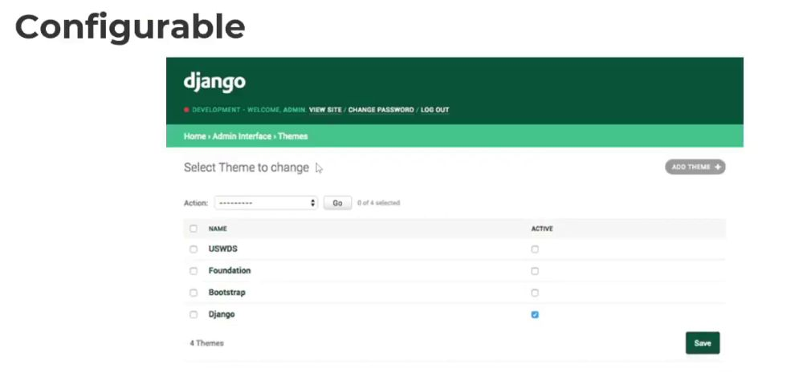
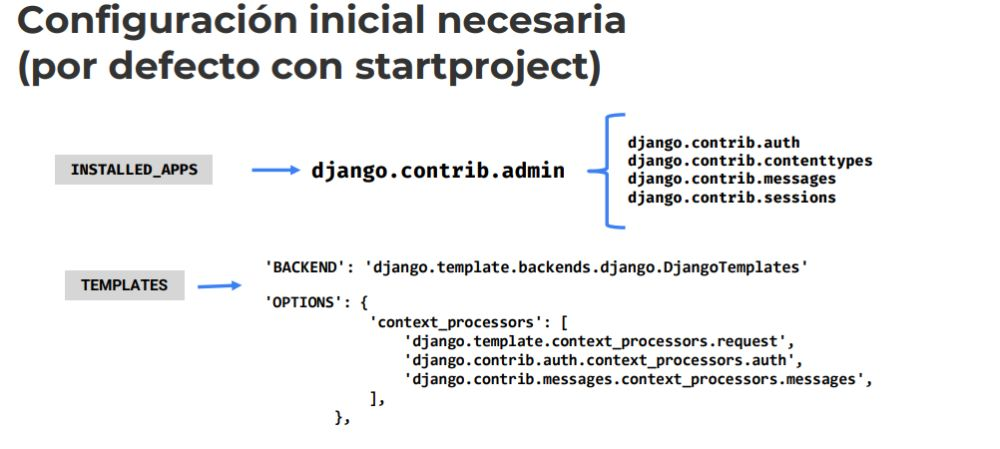
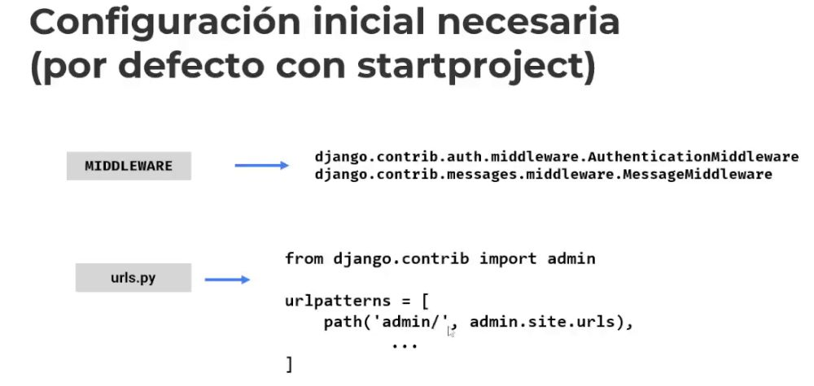
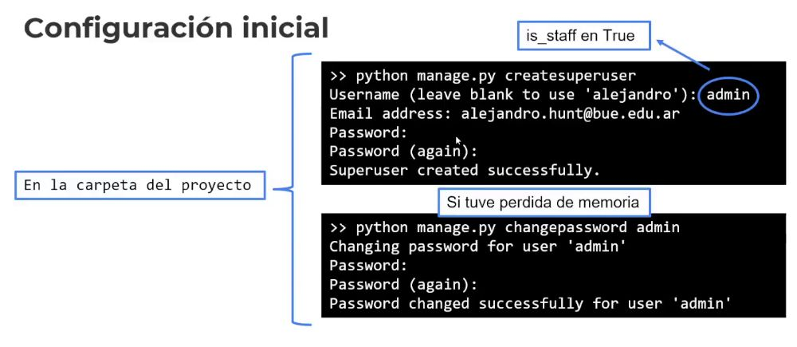
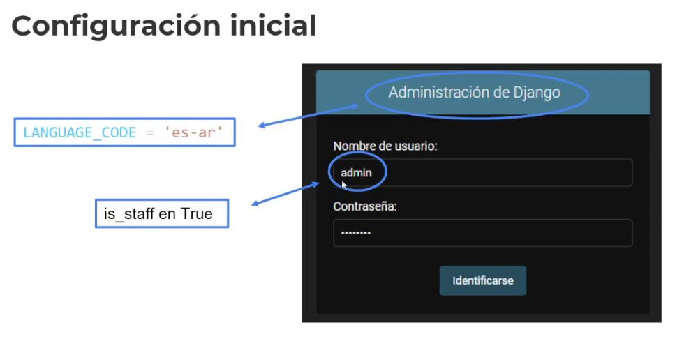
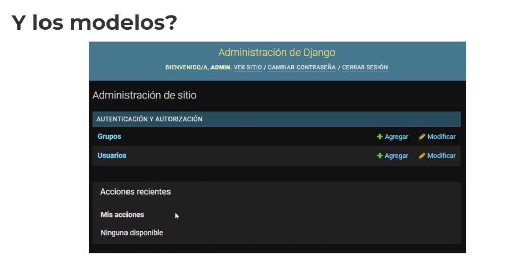
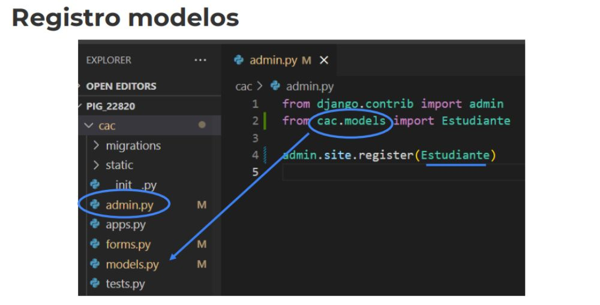
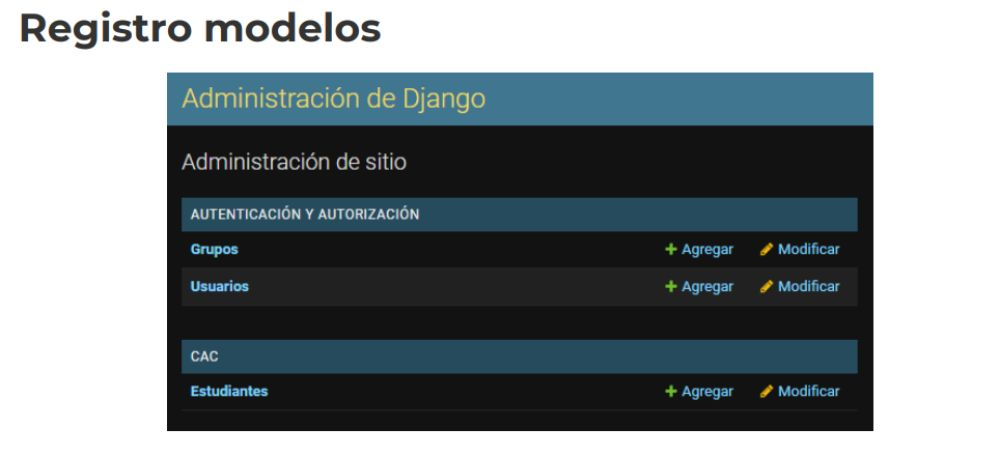
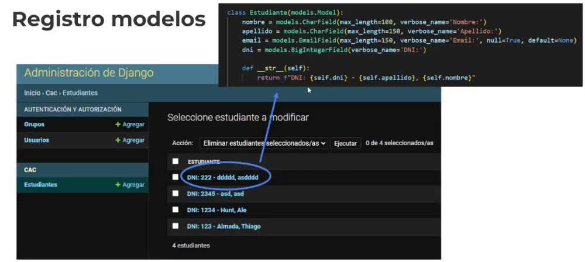
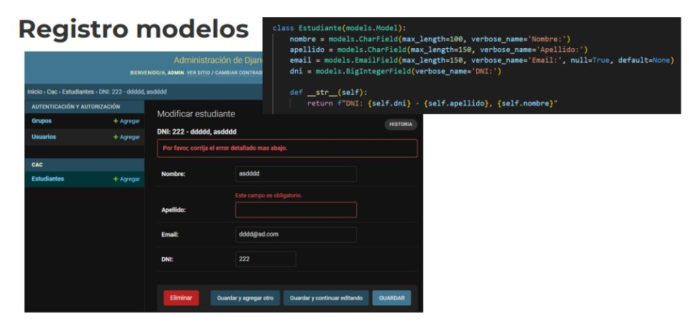

Desarrollo Django
1. ¿Qué es el Django Admin?
Una de las partes más poderosas de Django es la interfaz de
administración automática. Lee los metadatos de los modelos para
proporcionar una interfaz rápida y centrada en el modelo donde los
usuarios de confianza pueden administrar el contenido de su sitio. La
herramienta se encuentra enfocada en la administración interna del
sistema por parte de un administrador pero no está pensada para el
usuario final. Su intención no es armar un front-end completo de
administración
* Está integrada y la podemos sacar si es necesario.
2. Configurable

Con colores, estilos y demás..
3. Configuración inicial necesaria - (por defecto con startproject)
Cuando comenzamos con el proyecto se instala el django admin.
- Si vemos el django encontramos el contrib - > Admin

Los middlewares es código que se ejecuta ANTES de que llegue a nuestro sitio..
Entre que ingresa al server y llega a nuestro backend.
-> admin, podemos poner el nombre que deseemos
Debemos agregar o linkear la url de admin/, admin.site.urls..

* Por lo cual podremos tener dos administraciones.. El propio de la página y el admindjango.
Desde consola:
- python manage.py createsuperuser -> Definimos el nombre del usaurio.
Este usuario lo usamos dentro del django_admin..
is_stafs -> El que tiene más privilegios, si es True, entra
* Para el lenguaje, recordar el LANGUAGE_CODE = 'es-ar' -> Castellano argentino
---- Ejemplo Práctico
from django.contrib import admin
from cac.models import Estudiante, Comision -> Registramos nuestros modelos con la interfaz del Django Admin
class EstudianteAdmin(admin.ModelAdmin):
pass
admin.site.register(Estudiante, EstudianteAdmin) -> Acá además agregamos la comision
# admin.site.register(Comision) -> Con esta linea agregamos al Admin el Modelo de Estudiante
@admin.register(Comision)
class ComisionAdmin(admin.ModelAdmin):
pass
--- Además dentro de los models.py sobreescribimos el __str__ para visualizar la data de manera más clara..
class Estudiante(models.Model):
nombre = models.CharField(max_length=100, verbose_name='Nombre:')
apellido = models.CharField(max_length=150, verbose_name='Apellido:')
email = models.EmailField(
max_length=150, verbose_name='Email:', null=True, default=None)
dni = models.BigIntegerField(verbose_name='DNI:')
comision = models.ForeignKey(Comision, on_delete=models.SET_NULL, null=True)
class Meta:
verbose_name_plural = "Estudiantes"
def __str__(self):
return f"DNI: {self.dni} - {self.apellido}, {self.nombre}" -> De está manera visualizamos la data en Django Admin
4. Configuración inicial


5. Y los modelos?

6. Registro modelos




Además si en el models.py... Agregamos la Comisión y el Estudiante
from ast import mod
from email.policy import default
from tabnanny import verbose
from django.db import models
class Comision(models.Model): -> Comision
nombre = models.CharField(max_length=150, verbose_name='Comsion:') * Cada charField va pensado con detenimiento de antemano.
imagen = models.ImageField(verbose_name="Imagen:", default=None, null=True) -> Esto es para la imagen.
class Meta:
verbose_name_plural = "Comisiones" -> Podemos decirle al modelo como se nombrará en plural.
* Para ordenarlos a criterio podemos usar verbose_name_plural = " 01 - Comisiones" -> Forma simple para reorganizar.
def __str__(self): Y en la otra clase usar verbose_name_plural = " 02 - Estudiantes" * O dejarlo sin el num, para legibilidad.
return self.nombre
def delete(self):
self.imagen.delete() -> ESTO ES PARA ELIMINAR LA IMAGEN
return super().delete() * Borramos la imagen ANTES de eliminar la comisión/la entidad
class Estudiante(models.Model): -> Estudiante
nombre = models.CharField(max_length=100, verbose_name='Nombre:')
apellido = models.CharField(max_length=150, verbose_name='Apellido:')
email = models.EmailField(
max_length=150, verbose_name='Email:', null=True, default=None)
dni = models.BigIntegerField(verbose_name='DNI:')
comision = models.ForeignKey(Comision, on_delete=models.SET_NULL, null=True) * La comisión está asociada a la comision
* on_delete=models.SET_NULL no en cacade, dejaremos nulos de ser necesario.
class Meta:
verbose_name_plural = "Estudiantes"
def __str__(self):
return f"DNI: {self.dni} - {self.apellido}, {self.nombre}"
def save(self, *args, **kwargs):
if self.apellido.upper() == 'MESSI':
raise ValueError("Messi es un maestro, no puede ser estudiante")
else:
super().save(*args, **kwargs)
def delete(self, *args, **kwargs):
if self.apellido.upper() == 'ALMADA':
raise ValueError("No se puede eliminar, tiene mucho que aprender")
return super().delete(*args, **kwargs)
--- Ahora en el Admin.py
from django.contrib import admin
from cac.models import Estudiante, Comision
class EstudianteAdmin(admin.ModelAdmin):
pass
admin.site.register(Estudiante, EstudianteAdmin) -> EstudianteAdmin, manejamos un admin específico para ese Admin
# admin.site.register(Comision)
@admin.register(Comision)
class ComisionAdmin(admin.ModelAdmin):
pass
Por lo tanto el Django Admin será más para el usuario de Sistema..
El otro admin más para el usaurio final.
* Para subir una imagen...
desde settings.py
MEDIA_URL = 'media/'
MEDIA_ROOT = BASE_DIR / 'media' -> La carpeta media, la debemos crear...
* Para borrar la imagen del lugar fisico, le especificamos el método delete.